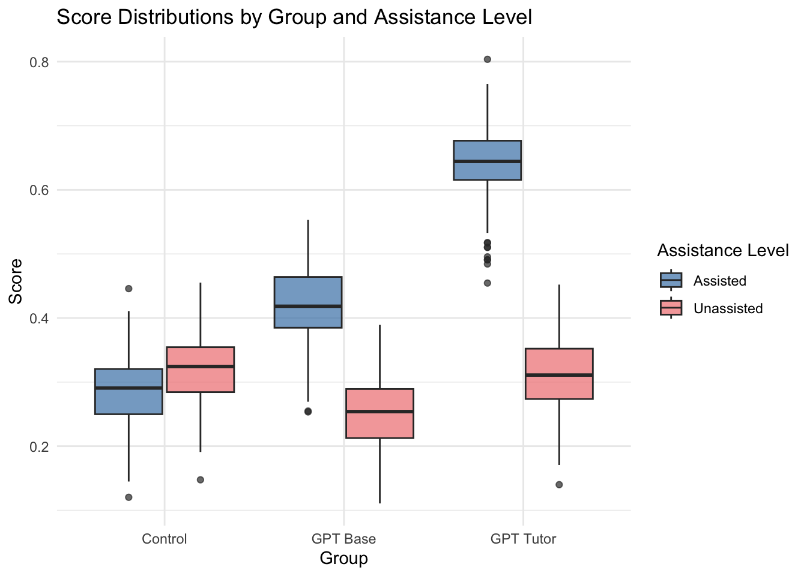
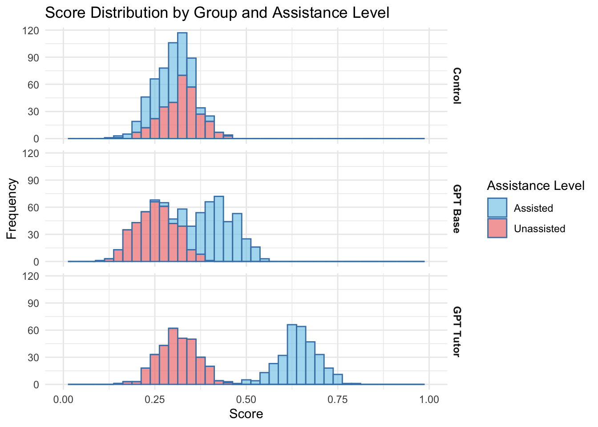

Generative AI Can Harm Learning: A Simulated Randomized Control Trial
Authors
Audrey Christensen (ac5470@columbia.edu)
Jared Donohue (jjd2203@columbia.edu)
Published
December 9, 2024
1 Executive Summary
In this report, we simulate a randomized control trial (RCT) conducted by the Wharton School in 2024, titled: “Generative AI Can Harm Learning”. Our replicated experiment confirmed that having access to Chat GPT-4 improves student performance on math tests, but actually reduces performance when access to Chat GPT is taken away, suggesting it hinders the long-term learning of new concepts. Conversely, using a customized Chat GPT-4 “Tutor” model boosted performance on assisted tasks without significantly affecting unassisted ones, indicating that purpose-built AI models may be a valuable tool for supporting long-term learning.
Bastani, Hamsa and Bastani, Osbert and Sungu, Alp and Ge, Haosen and Kabakcı, Özge and Mariman, Rei, Generative AI Can Harm Learning (July 15, 2024). The Wharton School Research Paper, Available at SSRN: https://ssrn.com/abstract=4895486 or http://dx.doi.org/10.2139/ssrn.4895486
2 Background and Additional Context
As AI-based chatbots have become more widely used, students have naturally started relying on them for homework, studying, and essay writing. However, these chatbots have not been around very long, so the effects on student learning is not well understood. Many discussions around the use of AI focus on increasing worker productivity and how to keep students from cheating with AI, rather than analyzing the impact that AI use has on students’ long-term learning of new concepts. While AI tools like GPT-4 have shown significant potential to enhance productivity and provide knowledge, they also pose risks, such as inhibiting learning through overreliance or reducing the development of foundational skills. Understanding this tradeoff is essential for ensuring that AI technologies are used responsibly and effectively, particularly in contexts like education where long-term skill development is crucial. There has been an increase in students using AI, and current lesson plans were not designed with that in mind. It would be difficult, at this point, to fully eliminate the use of AI by students. For that reason, it is important to understand the effect that it has on learning.
This research paper examines the problem of understanding the impact of AI integration in education by quantifying its effects on student performance. One challenge to this type of experiment is finding a way to implement a randomized controlled trial in the real world; this paper addresses that challenge by finding a highschool that randomly assigns its students to classrooms, creating a natural RCT experiment design. The experiment utilizes two custom-designed chatbots: “GPT Base,” modeled after GPT-4, and “GPT Tutor,” optimized for active learning. We evaluate student performance with and without access to these chatbots. The original study’s hypothesis posited that GPT Base may negatively affect students in two ways: by introducing errors that mislead students in subsequent unassisted problems, or by serving as a “crutch” that hinders full engagement with the material. In contrast, GPT Tutor was designed to mitigate these issues, as its prompt includes the solution, reducing the likelihood of errors, and it guides students step-by-step rather than providing direct answers. This approach aims to promote active learning and prevent over-reliance on AI assistance.
By reproducing this experiment with simulated data, we can demonstrate our ability to design and execute a randomized controlled trial, analyze the resulting data, and draw conclusions that inform the responsible integration of AI in education. The main challenges in replicating this experiment are accurately simulating students’ scores to reflect the impact of the GPT based chatbots and accurately capturing the differences between the GPT Base and GPT Tutor models.
Despite those potential challenges, this exercise allows us to apply our understanding of experimental methods to a real-world problem, while generating insights that can contribute to the ongoing discussion surrounding the impact of AI technologies on student learning and skill development.
3 Methodology Review
The research design was a randomized controlled trial involving nearly 1,000 students from 50 classrooms in grades 9 through 11 at a large high school in Turkey. Randomization was performed at the classroom level because students were already randomly assigned to these groups, and honors classrooms were excluded because they are not randomly assigned.
The study spanned four 90-minute sessions, each with a sequence of 3 activities. First, teachers reviewed the topic with students. Second, students participated in a randomized, assisted AI session, where they either used GPT Base, GPT Tutor, or relied on textbooks and notes (control group). This session was scored to assess performance. Finally, students completed an unassisted evaluation, also scored, to measure how well they had learned the new information.
Data was collected in three main ways. At the start of the study, students completed a survey capturing their demographics and educational background. During the sessions, student performance was recorded for both the assisted practice and the unassisted evaluations. Additionally, students who interacted with AI chatbots had their chat data logged, and surveys captured their experiences using the tools.
To evaluate the impact of the interventions, the authors used a regression model to analyze student outcomes. The dependent variable, Outcome(j) , represented the normalized grade of a student in either the assisted (j = 0) or unassisted (j = 1) sessions, scaled from 0 to 1. The researchers examined heterogeneous treatment effects, investigating how the treatment effects vary across different subgroups of the study population. Specifically, they analyzed whether the effects of AI assistance differed based on students’ prior academic performance, access to private tutoring, and hours spent studying. While this analysis can provide valuable insights into how different types of students may respond to AI tutoring tools, our replication using simulated data does not include this component. Our focus remains on reproducing the main effects observed in the original experiment.
The independent variables GPTBasec and GPTTutorc indicate the treatment group for each class. The model controlled for prior student performance using normalized GPA from the previous year, PrevGPAi, and included fixed effects for session, grade, year, and time-related variations (Ts, Dg, Ay, Gt). In our replication, we removed the fixed effects and GPA from the regression model.
This experiment was pre-registered on https://aspredicted.org/4DL_Q3J. Pre-registering experiments enhances the transparency and credibility of scientific research. By declaring hypotheses, methods, and analyses in advance, pre-registration helps reduce publication bias and prevents p-hacking, improving the scientific rigor of experiments.
Handling non-compliance was another interesting aspect of this experiment. In five instances, a treatment classroom could not execute the treatment due to unanticipated external circumstances. In the paper, researchers checked the validity of the results accounting for non-compliance by performing an alternative regression specification where non-compliers are excluded. The results for the alternative regression were nearly identical to the main analysis, confirming that non-compliance did not significantly alter the outcome of the experiment. Due to the negligible effect on overall results, we did not include this alternative regression in our analysis.
4 Dataset Creation
To construct our dataset, we reverse-engineered the score and classroom data. We modeled 50 classrooms with 20 students each, creating one row per student. Normalized previous GPA values were generated using a normal distribution with a mean of 0.82 and a standard deviation of 0.11, bounded between 0 and 1.
Classrooms were randomly assigned to GPT Base, GPT Tutor, or control groups. Assignment probabilities were based on the proportion of students in each group as reported in the original study.
Fixed effects were assigned randomly as integers, including session numbers (1–4), grade levels (9–12), teachers (1–20), and graders (1–10). Fixed effects were excluded from score generation, as their variance was already accounted for in the original study’s regression model. This approach allowed us to focus solely on replicating the treatment effects described in the paper.
Finally, student scores were simulated. Since standard errors were calculated at the classroom level, we generated coefficients for each classroom by using the coefficients and standard errors provided in the paper. Coefficients were drawn from a normal distribution using the reported means and standard deviations, then applied to the paper’s linear regression model with a small amount of noise to calculate scores for each student.
5 Replication Setup
Our replication focused on using our simulated data to reproduce the main regression model used in the original paper:
Where Outcome(j)ic is the normalized grade (0-1) for student i in class c for assisted (j=0) or unassisted (j=1) sessions, GPTBasec and GPTTutorc are binary indicators for the treatment group of class c, PrevGPAi is the normalized previous year GPA for student i, Ts, Dg, Ay, and Gt are fixed effects for session, grade, year, and time-related variations, and Eic is the error term.
Standard errors were clustered at the classroom level to account for within-group correlations, as done in the original study.
We examined the p-values of the coefficients and test scores for GPT Base and GPT Tutor to determine whether the use of AI caused a significant change in the students’ scores.
Code
n_classes <-50students_per_class <-20n_students <- n_classes * students_per_classmean_gpa <-0.82sd_gpa <-0.11control_mean_assisted <-0.284control_sd_assisted <-0.287control_mean_unassisted <-0.321control_sd_unassisted <-0.277beta_base_mean_assisted <-0.137beta_base_sd_assisted <-0.031beta_base_mean_unassisted <--0.054beta_base_sd_unassisted <-0.022beta_tutor_mean_assisted <-0.361beta_tutor_sd_assisted <-0.032beta_tutor_mean_unassisted <--0.004beta_tutor_sd_unassisted <-0.013beta_prevGPA_mean_assisted <-0.802beta_prevGPA_sd_assisted <-0.076beta_prevGPA_mean_unassisted <-1.334beta_prevGPA_sd_unassisted <-0.069# gpa data simulationprev_gpa <-rtruncnorm(n_students, a =0, b =1, mean = mean_gpa, sd = sd_gpa)# random assignment of class idsclass_ids <-rep(1:n_classes, each = students_per_class)student_ids <-1:n_students# assign treatment using probabilities from table 3 in the paperprob_base <-242/839prob_tutor <-277/839prob_control <-320/839treatment_assignment <-sample(c("GPT_base", "GPT_tutor", "control"), prob =c(prob_base,prob_tutor,prob_control), n_classes, replace =TRUE)GPT_base_class <-as.integer(treatment_assignment =="GPT_base")GPT_tutor_class <-as.integer(treatment_assignment =="GPT_tutor")control_class <-as.integer(treatment_assignment =="control")GPT_base <-rep(GPT_base_class, each = students_per_class)GPT_tutor <-rep(GPT_tutor_class, each = students_per_class)control <-rep(control_class, each = students_per_class)# fixed effectssessions <-sample(1:4, n_students, replace =TRUE)grade_levels <-sample(9:12, n_students, replace =TRUE) teachers <-sample(1:20, n_students, replace =TRUE)graders <-sample(1:10, n_students, replace =TRUE)
6 Simulation of Student Scores
Student scores are simulated. Since standard errors were calculated at the classroom level, we generated coefficients for each classroom by using the coefficients and standard errors provided in the paper. Coefficients were drawn from a normal distribution using the reported means and standard deviations, then applied to the paper’s linear regression model with a small amount of noise to calculate scores for each student.
Results show that use of the chatbots increased performance on the assisted assessment, with GPT Base improving scores by .137 (out of 1) and GPT Tutor improving scores by .361 (out of 1) relative to the control group. On the unassisted assessment, GPT Base decreased performance by .054 (out of one) relative to the control group (17% decrease). GPT Tutor’s impact on the unassisted portion was statistically significant at -.004. Our replication yielded results that closely aligned with the original study, with Assisted assessments: GPT Base: Coefficient = 0.135 (SE = 0.021) and GPT Tutor: Coefficient = 0.358 (SE = 0.023). And unassisted assessment of GPT Base: Coefficient = -0.052 (SE = 0.019), and GPT Tutor: Coefficient = -0.005 (SE = 0.020).
These results are very close to the original study’s findings, where GPT Base improved assisted scores by 0.137 and decreased unassisted scores by 0.054, and GPT Tutor improved assisted scores by 0.361 and had a minimal effect (-0.004) on unassisted scores.
The p-values of our two-sample t-tests generally align with the original study’s findings, where GPT Base improved assisted scores and decreased unassisted scores with statistical significance (p<0.001), and GPT Tutor did not have a statistically significant impact on unassisted scores (p=0.0589). All differences between assisted and unassisted scores were statistically significant (p<0.001).
Our replication successfully reproduced the key findings: GPT Base significantly improved performance on assisted tasks but hindered performance on unassisted tasks, while GPT Tutor substantially improved assisted performance without significantly impacting unassisted performance.
ggplot(long_data, aes(x = group, y = score, fill = assistance)) +geom_boxplot(position =position_dodge(width =0.8), alpha =0.7) +labs(title ="Score Distributions by Group and Assistance Level",x ="Group",y ="Score",fill ="Assistance Level" ) +scale_fill_manual(values =c("Assisted"="steelblue", "Unassisted"="lightcoral") ) +theme_minimal() +theme(strip.text =element_text(face ="bold") )

Code
ggplot(long_data, aes(x = score, fill = group)) +geom_histogram(binwidth =0.05, color ="steelblue", fill ="skyblue", position ="stack") +facet_grid(group ~ assistance) +labs(title ="Score Distributions by Group and Assistance Level",x ="Score",y ="Frequency" ) +theme_minimal() +theme(strip.text =element_text(face ="bold"),legend.position ="none" )
long_data_combined <- long_data |>filter(assistance %in%c('Assisted', 'Unassisted'))long_data_combined |>ggplot(aes(score, fill = assistance)) +geom_histogram(binwidth =0.025, color ='steelblue', alpha =0.7) +facet_grid(group ~ .) +scale_x_continuous(limits =c(0, 1)) +scale_fill_manual(values =c('Assisted'='skyblue', 'Unassisted'='lightcoral')) +labs(title ="Score Distribution by Group and Assistance Level", x ="Score", y ="Frequency", fill ="Assistance Level") +theme_minimal() +theme(strip.text =element_text(face ="bold"))

Code
ggplot(data=long_data_combined, aes(x = score, y = group, fill = assistance, height = ..density..)) +geom_density_ridges(alpha =0.6, scale = .5) +scale_fill_manual(values =c('Assisted'='skyblue', 'Unassisted'='lightcoral')) +scale_x_continuous(limits =c(0, 1)) +# Set x-axis range from 0 to 1labs(title ="Score Distribution by Group and Assistance Level", x ="Score", y ="Group", fill ="Assistance Level") +theme(strip.text =element_text(face ="bold"))
data <-read.csv('./simulated_data')c <- data |>select(scores_assisted, scores_unassisted) |>filter(control==1)t1_base <- data |>select(scores_assisted, scores_unassisted) |>filter(GPT_base==1)t2_tutor <- data |>select(scores_assisted, scores_unassisted) |>filter(GPT_tutor==1)# Function to perform t-test and extract resultsperform_ttest <-function(group1, group2, test_name) { result <-t.test(group1, group2)data.frame(Test = test_name,t_statistic =round(result$statistic, 3),df =round(result$parameter, 2),p_value =ifelse(result$p.value <0.001, "< 0.001", format(result$p.value, digits =3)),mean_diff =round(result$estimate[1] - result$estimate[2], 3) )}# Perform all t-teststests <-rbind(perform_ttest(c$scores_assisted, t1_base$scores_assisted, "Control vs. GPT Base (Assisted)"),perform_ttest(c$scores_assisted, t2_tutor$scores_assisted, "Control vs. GPT Tutor (Assisted)"),perform_ttest(c$scores_unassisted, t1_base$scores_unassisted, "Control vs. GPT Base (Unassisted)"),perform_ttest(c$scores_unassisted, t2_tutor$scores_unassisted, "Control vs. GPT Tutor (Unassisted)"),perform_ttest(c$scores_unassisted, c$scores_assisted, "Control: Unassisted vs. Assisted"),perform_ttest(t1_base$scores_unassisted, t1_base$scores_assisted, "GPT Base: Unassisted vs. Assisted"),perform_ttest(t2_tutor$scores_unassisted, t2_tutor$scores_assisted, "GPT Tutor: Unassisted vs. Assisted"))# Remove the row names (which contain "t", "t1", "t2", etc.)rownames(tests) <-NULL# Create and display the tablekable(tests, col.names =c("Test", "t-statistic", "df", "p-value", "Mean Difference"),caption ="T-Test Results",align =c('l', 'r', 'r', 'r', 'r'))
T-Test Results
Test
t-statistic
df
p-value
Mean Difference
Control vs. GPT Base (Assisted)
-32.909
667.04
< 0.001
-0.134
Control vs. GPT Tutor (Assisted)
-84.749
617.68
< 0.001
-0.356
Control vs. GPT Base (Unassisted)
16.649
654.91
< 0.001
0.068
Control vs. GPT Tutor (Unassisted)
1.892
616.72
0.0589
0.008
Control: Unassisted vs. Assisted
8.166
597.19
< 0.001
0.034
GPT Base: Unassisted vs. Assisted
-41.995
757.62
< 0.001
-0.168
GPT Tutor: Unassisted vs. Assisted
-77.674
637.36
< 0.001
-0.330
8 Conclusion
Our replication study corroborates the original paper’s findings about the differential impacts of AI chatbots on student learning. Our analysis shows that both of the AI models improved immediate performance (assisted tasks), but the long-term impacts differed significantly depending on which AI chatbot was used. This highlights the importance of distinguishing between short-term assistance and actual learning.
The stark contrast between GPT Base and GPT Tutor’s effects on unassisted performance underscores the critical role of AI design in educational contexts. Purpose-built AI tutors like GPT Tutor can enhance learning without the detrimental effects seen with general-purpose AI. GPT Tutor’s ability to improve assisted performance without significantly impacting unassisted performance suggests that carefully designed AI tools can be valuable educational assets. This opens up possibilities for integrating AI into curricula in ways that support rather than hinder learning. The negative impact of GPT Base on unassisted performance serves as a warning against uncritical adoption of general-purpose AI in educational settings. It emphasizes the need for careful consideration and possibly regulation of AI use in education.
This study paves the way for further research into optimizing AI for educational purposes, understanding the long-term impacts of AI use on skill development, and developing best practices for AI integration in various educational contexts. In conclusion, our replication reinforces the original study’s message: while AI has the potential to revolutionize education, its implementation must be thoughtful and purposeful to ensure it enhances rather than hinders genuine learning and skill development.
9 Citation
Bastani, Hamsa and Bastani, Osbert and Sungu, Alp and Ge, Haosen and Kabakcı, Özge and Mariman, Rei, Generative AI Can Harm Learning (July 15, 2024). The Wharton School Research Paper, Available at SSRN: https://ssrn.com/abstract=4895486 or http://dx.doi.org/10.2139/ssrn.4895486